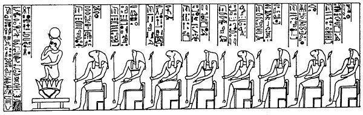
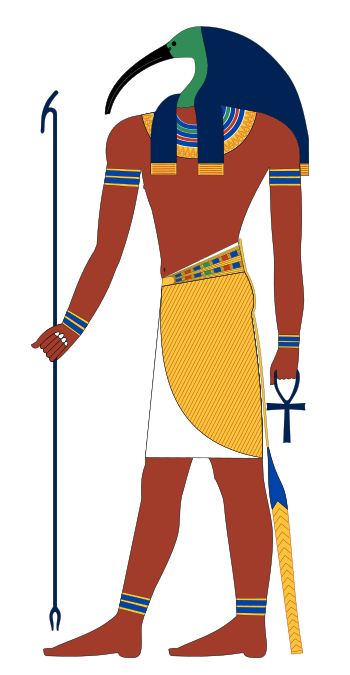

From Hermopolis: Khemnu in Egyptian (meaning the city of eight, such as Ogdoad) and capital of the 15th nome, this cosmogony, of which different versions exist, this one being only the main one, has Thot as its titular god (divinity of wisdom, knowledge, moon, and owner of the scripture). Thoth undertook the creation with the help of 8 creative gods: 4 male gods and 4 goddesses, female counterpart. The males were given a frog's head and the females a snake's head.
These 8 gods, forming the Ogdoad, are Nun and Nunet (the liquid element), Heh and Hehet (the infinite), Kekou and Keket (the darkness) and Amun and Amunet (the mysterious, "hidden" element). They covered a strange egg deposited by Thot on the primordial mound recently gushed out of the Noun (probably a metaphor for the Nile in flood from which only the mounds emerge), until the sun burst forth, which then rose to the heavens.
This cosmogony is said to be the oldest in Egypt, although documents remain very rare before the Middle Kingdom. As for Heliopolis, before Creation, there was something inert with all the right elements in it to the emergence of a demiurge.
